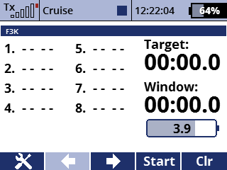

Dies ist eine Timer-App der alle offiziellen F3K-Aufgaben und zwei Übungsaufgaben anbietet.
Sie stellt ihre eigenen Timer zur Verfügung, die in Lua implementiert ist, und verlässt sich nicht auf die integrierten Timer. Daher ist es ratsam, wenn Sie die App testen möchten, zuerst eine Kopie Ihres Modells zu erstellen und die von Ihnen eingerichteten Timer zu löschen, um doppelte Zeitaufrufe zu vermeiden. Die Timer aus der App können auch auf dem Hauptbildschirm als angezeigte Telemetrie hinzugefügt werden.
Der Flugtimer wird gestartet und gestoppt, wenn Sie den Startschalter aktivieren. Im Normalmodus aktivieren Sie den Startschalter, um den Timer zu starten, und erneut, um ihn zu stoppen. Im "QR"-Modus startet der Timer sofort wieder, wenn Sie den Startschalter loslassen, sodass Sie "schnell umdrehen" durchführen können. Standardmäßig friert der Flugtimer am Ende der Rahmenzeit ein, sodass Sie erstens landen und dann die Flugzeit speichern können.
Für Poker und die Übungsaufgabe "Schnell umdrehen!" können Sie die Zielzeit mit einem Knopf einstellen.
Bei 1234 erhalten Sie einige zusätzliche Zeitansagen vor jeder vollen Minute, um Ihnen bei der Entscheidung zu helfen, ob Sie auf der nächsten vollen Minute landen möchten. Es setzt auch "intelligente" Zielzeiten, abhängig von den bereits aufgezeichneten Flügen.
Es gibt auch eine Funktion, die jede 10 Sekunden die verbleibende Rahmenzeit aufruft, um Ihnen bei der Entscheidung zu helfen, wann Sie während der "letzten Flüge"-Runden starten möchten.
Zeitmessungen können gespeichert und bearbeitet werden, sodass Sie während der Wettbewerbe eine elektronische Aufgabenkarte führen können.
Das folgende Video ist auf Englisch.
Sie können den Quellcode aus dem SoarJETI GitHub-Repository herunterladen..